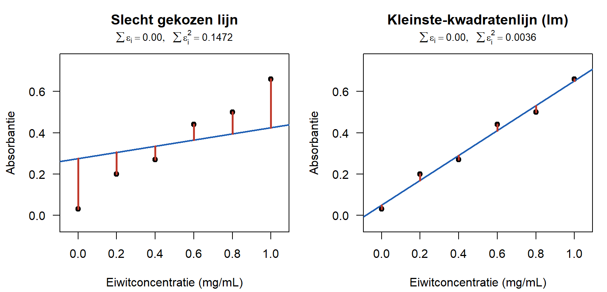
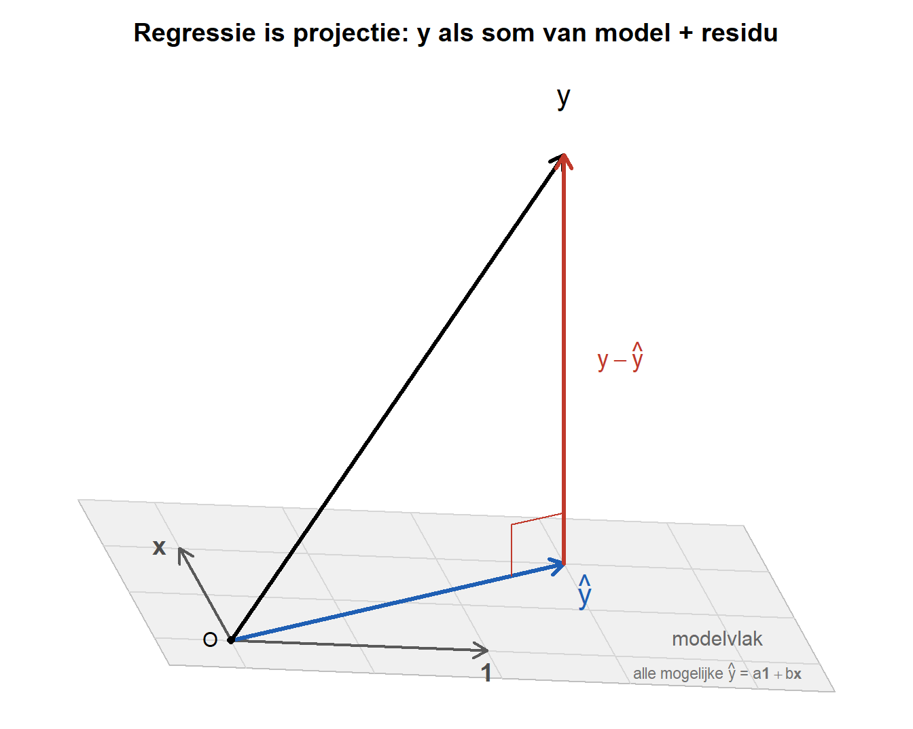

3 Lineaire regressie: vectoren en projectie.
In de opdracht over logaritmes en allometrische schaling gebruikte je al de functie lm(), om een rechte lijn door log-log-getransformeerde data te trekken. Straks, in het practicum bij de Bradford-test, gebruik je dezelfde functie opnieuw: je meet de absorbantie van oplossingen met bekende eiwitconcentraties en maakt daarmee een ijklijn met lm(Abs ~ Conc). Tot nu toe was lm() een black box: de geschatte parameters verschijnen, zonder dat je weet wat er onder de motorkap gebeurt. In dit hoofdstuk openen we die black box, zodat je het practicum met begrip ingaat.
Daarvoor leren we een nieuw stuk wiskundige taal: vectoren en matrices. Je meetgegevens worden datavectoren, je dataset een datamatrix, en de onbekende getallen van de lijn vormen samen een parametervector. In die taal wordt het lineaire model één compacte vergelijking, met een verrassend meetkundige betekenis.
Dezelfde functie voor het metabolisme van zoogdieren en voor de absorbantie van een eiwitoplossing: dezelfde wiskunde, telkens een andere biologische context. In dit hoofdstuk gaan we begrijpen waarom die ene functie zo breed inzetbaar is.
De rode draad van dit hoofdstuk is bovendien een oude bekende. In de eerste portfolio-opdracht draaide alles om onzekerheid, en we maten die met entropie. We zullen zien dat regressie in de kern hetzelfde doet: ook regressie gaat over het verkleinen van onzekerheid door gebruik te maken van informatie. Waar entropie discreet en in kansen rekent, rekent regressie continu en met varianties; wil je daar entropie gebruiken, dan heb je een continue versie van entropie nodig. Het onderliggende idee is hetzelfde.
3.1 Het model in vectorvorm
3.1.1 Datavectoren en de datamatrix
Bij de Bradford-test meet je per oplossing twee getallen: een concentratie en een absorbantie. Een geordend rijtje getallen heet een vector. Alle concentraties samen vormen één vector, alle absorbanties samen een tweede. Omdat elk element een gemeten waarde is, noemen we ze datavectoren. Bij \(n\) metingen schrijven we
\[\mathbf{x} = \begin{pmatrix} x_1 \\ x_2 \\ \vdots \\ x_n \end{pmatrix}, \qquad \mathbf{y} = \begin{pmatrix} y_1 \\ y_2 \\ \vdots \\ y_n \end{pmatrix}\]
met \(\mathbf{x}\) de concentraties en \(\mathbf{y}\) de absorbanties. Vectoren schrijven we vet. Een los element, zoals de \(i\)-de meting \(x_i\), is een gewoon getal (een scalar).
Zet je datavectoren als kolommen naast elkaar, dan krijg je een datamatrix: een tabel met getallen waarin elke kolom een variabele is en elke rij een meting. De afmeting van een matrix noteren we als (aantal rijen) \(\times\) (aantal kolommen); de datamatrix met \(\mathbf{x}\) en \(\mathbf{y}\) is dus \(n \times 2\).
Je werkte al met datavectoren zonder ze zo te noemen: massa <- c(0.002, 0.008, ...) uit de allometrie-opdracht is er één. De functie c() (combine) combineert losse getallen tot een vector.
3.1.2 Rekenen met vectoren en matrices
Met deze nieuwe objecten kun je rekenen, en daarvoor hoef je geen nieuwe bewerkingen te leren. Optellen en vermenigvuldigen ken je al van getallen; we breiden ze uit naar vectoren en matrices.
Optellen van twee vectoren van gelijke lengte gaat elementsgewijs:
\[\begin{pmatrix} 2 \\ 5 \\ 3 \end{pmatrix} + \begin{pmatrix} 1 \\ 1 \\ 4 \end{pmatrix} = \begin{pmatrix} 3 \\ 6 \\ 7 \end{pmatrix}\]
Een getal maal een vector vermenigvuldigt elk element met dat getal:
\[2 \cdot \begin{pmatrix} 2 \\ 5 \\ 3 \end{pmatrix} = \begin{pmatrix} 4 \\ 10 \\ 6 \end{pmatrix}\]
R werkt op dezelfde manier: massa * 2 vermenigvuldigt elk element van de vector met 2.
Een matrix maal een vector is iets rijker. Neem van elke rij van de matrix de gewogen som: vermenigvuldig de elementen van die rij met de overeenkomstige elementen van de vector, en tel ze op. Elke rij levert zo één getal van de uitkomst:
\[\begin{pmatrix} 1 & 3 \\ 1 & 5 \end{pmatrix} \begin{pmatrix} a \\ b \end{pmatrix} = \begin{pmatrix} 1\cdot a + 3\cdot b \\ 1\cdot a + 5\cdot b \end{pmatrix} = \begin{pmatrix} a + 3b \\ a + 5b \end{pmatrix}\]
Een matrix maal een vector levert dus weer een vector op. Dat kan alleen als het aantal kolommen van de matrix gelijk is aan de lengte van de vector.
Dit is nog geen volledige lineaire algebra; die komt later in een eigen cursus. Hier gaat het om: dezelfde bewerkingen, een rijker object.
3.1.3 Het lineaire model als matrixvergelijking
In het practicum beschrijf je de relatie tussen absorbantie en concentratie met een lineair model:
\[\text{Abs} = a + b \cdot \text{Conc}\]
Hierin zijn \(\text{Abs}\) (absorbantie) en \(\text{Conc}\) (concentratie) de variabelen. We schrijven hun namen rechtop, zodat je ze niet leest als een product van losse letters. Het intercept \(a\) en de richtingscoëfficiënt (helling) \(b\) zijn de parameters: vaste, maar onbekende getallen die we uit de meetgegevens moeten schatten.
Dit verband geldt idealiter voor elke meting. Maar we hebben niet één meting, we hebben er \(n\). Voor meting \(i\) schrijven we:
\[y_i = a + b \cdot x_i + \varepsilon_i\]
Hier is \(y_i\) de waargenomen uitkomst (de absorbantie), \(x_i\) de predictor (de concentratie), en \(\varepsilon_i\) een residu: het verschil tussen wat het model voorspelt en wat we echt meten. Dat residu is er altijd, omdat de meetpunten nooit precies op één lijn liggen.
Al deze \(n\) vergelijkingen tegelijk kunnen we compact opschrijven met vectoren en een matrix:
\[\mathbf{y} = \mathbf{X}\boldsymbol{\beta} + \boldsymbol{\varepsilon}\]
waarbij
\[\mathbf{y} = \begin{pmatrix} y_1 \\ y_2 \\ \vdots \\ y_n \end{pmatrix}, \qquad \mathbf{X} = \begin{pmatrix} 1 & x_1 \\ 1 & x_2 \\ \vdots & \vdots \\ 1 & x_n \end{pmatrix}, \qquad \boldsymbol{\beta} = \begin{pmatrix} a \\ b \end{pmatrix}, \qquad \boldsymbol{\varepsilon} = \begin{pmatrix} \varepsilon_1 \\ \varepsilon_2 \\ \vdots \\ \varepsilon_n \end{pmatrix}\]
De matrix \(\mathbf{X}\) heet de designmatrix. De eerste kolom bestaat volledig uit enen; die hoort bij het intercept \(a\). De tweede kolom is de datavector \(\mathbf{x}\) met predictoren. De twee parameters vormen samen de parametervector \(\boldsymbol{\beta}\). Volgens de regel voor matrix maal vector is het product \(\mathbf{X}\boldsymbol{\beta}\) opnieuw een vector, met op plek \(i\) precies de voorspelling \(a + b \cdot x_i\). Eén matrix-vector-product levert zo in één keer alle \(n\) voorspellingen op.
Vraag 1: Stel dat je drie metingen hebt met concentraties \(x_1 = 2\), \(x_2 = 4\) en \(x_3 = 6\). Schrijf de designmatrix \(\mathbf{X}\) volledig uit. Wat is de afmeting (\(\ldots \times \ldots\)) van \(\mathbf{X}\), en hoeveel elementen heeft de datavector \(\mathbf{y}\)?
jouw antwoord:
Vraag 2: Reken met de designmatrix uit Vraag 1 het product \(\mathbf{X}\boldsymbol{\beta}\) uit, met \(\boldsymbol{\beta} = (a, b)\). Wat valt je op als je de uitkomst vergelijkt met het lineaire model \(y_i = a + b\,x_i\)? Welke rol speelt de kolom met enen?
jouw antwoord:
3.2 Regressie is projectie
Nu komt de kern van dit hoofdstuk, en meteen het lastigste idee. Welke \(a\) en \(b\) kiest lm() eigenlijk? We bekijken dat eerst concreet, in de vertrouwde scatterplot, en daarna meetkundig, op een nieuwe manier.
3.2.1 Kleinste kwadraten: de beste lijn kiezen
Elke keuze van \(a\) en \(b\) geeft een andere rechte lijn door de scatterplot. Voor elke meting is het residu
\[\varepsilon_i = y_i - (a + b\,x_i)\]
de verticale afstand tussen het meetpunt en de lijn: positief als het punt boven de lijn ligt, negatief als het eronder ligt. Een goede lijn heeft kleine residuen. Om dat in één getal te vangen, kwadrateren we alle residuen en tellen ze op:
\[\text{SS}_{\text{res}} = \sum_{i=1}^{n} \varepsilon_i^2\]
Dit is de kwadratensom van de residuen (sum of squares). De beste lijn is de lijn waarvoor deze som zo klein mogelijk is. Dat heet de kleinste-kwadratenmethode, en het is precies wat lm() voor je uitrekent.
In Figuur 3.1 zie je dezelfde zes metingen twee keer. Links staat een slecht gekozen lijn: de residuen zijn groot. Rechts staat de lijn die lm() vindt: de residuen zijn veel kleiner, en de kwadratensom is ruim veertig keer zo klein.
Vraag 3: Boven beide panelen staat ook de gewone som van de residuen, \(\sum \varepsilon_i\). Die is in beide gevallen nul, terwijl de linker lijn duidelijk slecht past. Leg uit hoe dat kan, en waarom we de residuen daarom kwadrateren voordat we ze optellen.
jouw antwoord:
3.2.2 Dezelfde regressie, meetkundig bekeken
We weten nu dat lm() de kwadratensom minimaliseert. Er is een tweede manier om naar precies dezelfde berekening te kijken, die laat zien waarom het minimum ligt waar het ligt. Daarvoor kijken we op een ongewone manier naar de data.
In de scatterplot was elk punt één meting. Nu vatten we de héle uitkomst-datavector \(\mathbf{y}\) op als één punt in een ruimte, met één as per meting. Bij drie metingen is \(\mathbf{y} = (y_1, y_2, y_3)\) dus één pijl in een driedimensionale ruimte, vanuit de oorsprong.
In het algemeen heeft deze ruimte evenveel dimensies als je metingen hebt: bij \(n\) metingen is \(\mathbf{y}\) een punt in een \(n\)-dimensionale ruimte. Meer dan drie dimensies kunnen we niet tekenen; daarom gebruiken we in de figuur \(n = 3\), maar de redenering blijft voor elke \(n\) hetzelfde.
Ook de voorspellingen van het model vormen een vector met \(n\) elementen, één voor elke gemeten waarde van de responsvariabele. Element \(i\) is de waarde op de lijn bij concentratie \(x_i\), namelijk \(a + b\,x_i\). Daarom liggen de metingen en de voorspellingen in dezelfde \(n\)-dimensionale ruimte, en kun je ze van elkaar aftrekken: ook het residu heeft \(n\) elementen, één per meting.
De voorspellingen van het model kunnen in die ruimte niet zomaar overal liggen. Met de rekenregels van hierboven kun je \(\mathbf{X}\boldsymbol{\beta}\) ook schrijven als
\[\mathbf{X}\boldsymbol{\beta} = a \cdot \mathbf{1} + b \cdot \mathbf{x}\]
waarbij \(\mathbf{1} = (1, 1, \ldots, 1)\) de kolom met enen is en \(\mathbf{x}\) de kolom met concentraties: de twee kolommen van de designmatrix. Elke voorspelling is dus “\(a\) stappen in de richting van \(\mathbf{1}\), plus \(b\) stappen in de richting van \(\mathbf{x}\)”. Alle punten die je zo kunt bereiken, vormen samen een plat vlak door de oorsprong: het modelvlak. De twee richtingen van dat vlak zijn dus de kolommen \(\mathbf{1}\) en \(\mathbf{x}\) van de designmatrix; het intercept \(a\) en de helling \(b\) zeggen hoe ver je langs elk van die richtingen gaat.
Hoe groot \(n\) ook is, het modelvlak blijft tweedimensionaal, omdat het model twee parameters heeft. Voor het residu blijven \(n - 2\) dimensies over; dat getal zie je in summary() terug als degrees of freedom.
Zo ontstaat een vertaling tussen de twee plaatjes: elke rechte lijn die je in de scatterplot zou kunnen tekenen, dus elke keuze van \(a\) en \(b\), is in deze ruimte precies één punt van het modelvlak. Het modelvlak is de verzameling van álle mogelijke lijnen.
De waargenomen \(\mathbf{y}\) ligt vrijwel nooit precies in dat vlak; er is immers ruis. De vraag van regressie wordt daarmee meetkundig: welk punt in het modelvlak ligt het dichtst bij \(\mathbf{y}\)? Dat dichtstbijzijnde punt noemen we \(\hat{\mathbf{y}}\), de projectie van \(\mathbf{y}\) op het modelvlak. Je kunt het zien als de schaduw die \(\mathbf{y}\) recht op het vlak werpt.
Dat dit dezelfde vraag is als bij de kleinste kwadraten, zie je met de stelling van Pythagoras. De lengte van een vector, genoteerd als \(\|\mathbf{v}\|\), is de wortel uit de som van de kwadraten van zijn elementen: Pythagoras, maar nu met meer dan twee termen. Voor de afstand tussen \(\mathbf{y}\) en een punt \(\hat{\mathbf{y}}\) in het modelvlak geldt dus
\[\|\mathbf{y} - \hat{\mathbf{y}}\|^2 = \sum_{i=1}^{n} (y_i - \hat{y}_i)^2 = \sum_{i=1}^{n} \varepsilon_i^2 = \text{SS}_{\text{res}}\]
Het kwadraat van die afstand is precies de kwadratensom van de residuen van de bijbehorende lijn. Het dichtstbijzijnde punt zoeken en de kleinste kwadratensom zoeken zijn dus één en dezelfde opdracht.

In Figuur 3.2 zie je alle vectoren vanuit de oorsprong \(O\). De grijze pijlen \(\mathbf{1}\) en \(\mathbf{x}\) zijn de twee richtingen van het modelvlak; het raster in het vlak volgt die richtingen, zodat je kunt aflezen hoeveel stappen \(a\) en \(b\) nodig zijn om een punt te bereiken. De blauwe \(\hat{\mathbf{y}}\) ligt in het modelvlak: dit is de beste voorspelling die het model kan maken. De zwarte \(\mathbf{y}\) steekt uit het vlak omhoog: dit is wat je werkelijk hebt gemeten. De rode vector \(\mathbf{y} - \hat{\mathbf{y}}\) verbindt de projectie met de waarneming. Dat is de residuvector (restvector): precies wat het model niet verklaart.
Het kleine hoekje bij de voet van de rode vector geeft aan dat het residu loodrecht op het modelvlak staat. Dat is geen toeval: de kortste afstand van een punt tot een vlak loopt altijd langs de loodlijn. Precies daarom is de projectie de best mogelijke keuze; elke andere keuze in het vlak zou een langer residu geven.
Waaróm het residu loodrecht staat, en hoe je dat uitrekent met een inproduct van vectoren, leer je later dit jaar in de cursus statistiek. Onthoud het rechte-hoekje; je komt het terug.
Vraag 4: Stel dat je meetpunten toevallig precies op een rechte lijn liggen, zonder enige ruis. Waar ligt de waarneming \(\mathbf{y}\) dan ten opzichte van het modelvlak? Hoe lang is de residuvector \(\mathbf{y} - \hat{\mathbf{y}}\) in dat geval? Beschrijf in woorden.
jouw antwoord:
Vraag 5: Regressie kiest \(\hat{\mathbf{y}}\) als het punt in het modelvlak dat het dichtst bij \(\mathbf{y}\) ligt. Leg uit waarom elk ánder punt in het vlak een langere residuvector zou opleveren. Gebruik daarbij het beeld van de loodlijn. Wat betekent dat voor de kwadratensom van de bijbehorende lijn in de scatterplot?
jouw antwoord:
3.3 Evo-devo: regressie als het verkleinen van onzekerheid
Nu leggen we de brug naar de biologie, en naar de rode draad van onzekerheid.
Bekijk de residuvector nog eens. Hoe korter die vector, hoe dichter de waarnemingen bij de voorspellingen liggen, en hoe beter het model de uitkomst voorspelt. Een korte residuvector betekent: als je de predictor kent, weet je de uitkomst vrijwel zeker. Een lange residuvector betekent: zelfs mét de predictor blijft er veel onzekerheid over.
Dat is precies de gedachte die je kent van de entropie-splitsing uit de eerste opdracht:
\[H(\text{fenotype} \mid \text{soort}) < H(\text{fenotype})\]
Daar zagen we dat conditioneren op informatie de onzekerheid over het fenotype verkleint. De informatie was daar de soort: een categorie waarin je het individu plaatst. Weet je tot welke soort een individu behoort, dan blijft er minder onzekerheid over zijn fenotype over.
Regressie doet hetzelfde, maar continu. Om te zien hoe, splitsen we het model in twee delen:
\[y_i = \underbrace{a + b\,x_i}_{\text{deterministisch deel}} + \underbrace{\varepsilon_i}_{\text{stochastisch deel}}\]
Het deterministische deel \(a + b\,x_i\) ligt volledig vast zodra je \(x_i\) kent: dezelfde concentratie geeft altijd dezelfde voorspelling. Het is het systematische, voorspelbare deel van het model. Het stochastische deel \(\varepsilon_i\) is het deel dat ook mét kennis van \(x_i\) onvoorspelbaar blijft; net als de \(\chi^2\)-waarde uit de eerste opdracht is het een stochastische variabele.
Hier is de informatie dus de predictor \(x\): die legt het deterministische deel vast. Zonder \(x\) is de onzekerheid over een meting \(y\) groot; mét \(x\) blijft binnen dit model alleen de onzekerheid van het stochastische deel over:
\[\operatorname{Var}(y \mid x) = \operatorname{Var}(\varepsilon) < \operatorname{Var}(y)\]
De variantie zónder de predictor is groot; de overgebleven variantie gegeven de predictor, de spreiding rond de lijn, is kleiner. In je data zie je die overgebleven spreiding terug als de lengte van de residuvector. Regressie is dus de continue tegenhanger van de entropie-decompositie: dezelfde beweging van onzekerheid-verkleinen-door-informatie, in een andere wiskundige taal.
Opnieuw één idee in twee wiskundige vormen: onzekerheid die afneemt zodra je ergens op conditioneert. Entropie rekent met kansen en logaritmes, regressie met vectoren en varianties.
En hier komt de evo-devo binnen. Canalisatie is het vermogen van de ontwikkeling om, ondanks variatie in genotype of omgeving, steeds hetzelfde fenotype voort te brengen. In de taal van dit hoofdstuk is dat verrassend concreet: het verwachte fenotype is het deterministische deel, en canalisatie houdt het stochastische deel klein. Een sterk gekanaliseerd kenmerk heeft dus een korte residuvector: de individuele afwijkingen rond het verwachte fenotype zijn klein. Een slecht gebufferd, weinig gekanaliseerd kenmerk heeft juist een lange residuvector: veel onvoorspelbare variatie rond het verwachte fenotype.
Let op één nuance. Het stochastische deel mengt twee bronnen van variatie: echte biologische variatie tussen individuen én meetruis van je instrument. Canalisatie gaat over de eerste. Een korte residuvector door een nauwkeurige spectrofotometer is dus iets anders dan een korte residuvector door sterke ontwikkelingsbuffering, ook al zien ze er in de wiskunde hetzelfde uit. “Stochastisch” betekent hier ook niet “onbelangrijk”: de variatie tussen individuen is juist het materiaal waarop selectie werkt.
Vraag 6: Leg in je eigen woorden uit waarom een sterk gekanaliseerd kenmerk hoort bij een korte residuvector. Betrek daarin het begrip voorspelbaarheid: hoe goed kun je het fenotype van een individu voorspellen als het kenmerk sterk gekanaliseerd is?
jouw antwoord:
Vraag 7: In de eerste opdracht was onzekerheid discreet (entropie, in kansen); hier is ze continu (variantie, in een residuvector). Beschrijf in je eigen woorden welk idee in béíde gevallen hetzelfde is. Wat is telkens de informatie waarop je conditioneert, en welk deel van de onzekerheid blijft daarna over?
jouw antwoord:
Vraag 8 (speculatief): Canalisatie zorgt dat veel verschillende genotypen tot hetzelfde fenotype leiden, en maakt soorten daarmee tot scherpe, telbare en herkenbare eenheden. Bedenk een hypothese: hoe zou de mate van canalisatie (de lengte van de residuvector binnen een soort) kunnen samenhangen met hoe goed soorten in de biodiversiteit van elkaar te onderscheiden zijn? Er is hier geen goed of fout antwoord; durf te speculeren.
jouw antwoord:
3.4 Verdieping: Pythagoras en \(R^2\)
Deze sectie is een verdieping en een uitdaging. Ze is niet nodig om de rest te begrijpen; klap haar open als je verder wilt.
NoteOpen de verdieping
Kijk nog een keer naar Figuur 3.2. De drie vectoren \(\mathbf{y}\), \(\hat{\mathbf{y}}\) en \(\mathbf{y} - \hat{\mathbf{y}}\) vormen samen een driehoek, en dankzij het rechte-hoekje is dat een rechthoekige driehoek. Op een rechthoekige driehoek geldt de stelling van Pythagoras. Toegepast op de lengtes van deze vectoren levert dat:
\[\underbrace{\|\mathbf{y}\|^2}_{\text{totaal}} = \underbrace{\|\hat{\mathbf{y}}\|^2}_{\text{verklaard}} + \underbrace{\|\mathbf{y} - \hat{\mathbf{y}}\|^2}_{\text{residu}}\]
met \(\|\cdot\|\) de lengte van een vector, zoals eerder in dit hoofdstuk.
Werk je met de afwijkingen ten opzichte van het gemiddelde, dan zijn deze drie lengtes precies de bekende kwadratensommen uit de statistiek:
\[\text{SS}_{\text{tot}} = \text{SS}_{\text{reg}} + \text{SS}_{\text{res}}\]
De totale variatie in je data valt uiteen in een deel dat het model verklaart en een deel dat overblijft als residu. Dat is dezelfde soort opsplitsing als de entropie-decompositie uit de eerste opdracht, nu meetkundig afgedwongen door Pythagoras. Opnieuw duikt een vertrouwde wiskundige vorm op in een nieuwe context.
Uit deze opsplitsing volgt direct een maat voor hoe goed het model voorspelt, de determinatiecoëfficiënt \(R^2\) (in de uitvoer van summary() in R heet hij Multiple R-squared):
\[R^2 = \frac{\text{SS}_{\text{reg}}}{\text{SS}_{\text{tot}}} = 1 - \frac{\text{SS}_{\text{res}}}{\text{SS}_{\text{tot}}}\]
\(R^2\) is de fractie van de totale onzekerheid over \(\mathbf{y}\) die wegvalt zodra je de predictor kent. Ligt \(R^2\) dicht bij \(1\), dan is de residuvector kort en is het kenmerk goed voorspelbaar, sterk gekanaliseerd, in onze evo-devo-interpretatie. Ligt \(R^2\) dicht bij \(0\), dan voegt de predictor weinig toe.
In het practicum leer je de correlatiecoëfficiënt \(r\) kennen. Bij een model met één predictor, zoals hier, geldt \(R^2 = r^2\): het kwadraat van de correlatie is de fractie verklaarde variatie. Bij meerdere predictoren is dat verband minder eenvoudig.
De koppeling tussen “kleinere variantie” en “kleinere entropie” is exact te maken, maar alleen onder de aanname dat de variatie een normale (Gaussische) verdeling volgt; dan is de entropie een nette functie van de variantie. Voor ons volstaat de parallel: in beide gevallen meet je hoeveel onzekerheid er overblijft. De precieze voorwaarden leer je later dit jaar bij statistiek.
Vraag 9 (verdieping): Leg uit waarom \(R^2\) nooit groter dan \(1\) en nooit kleiner dan \(0\) kan zijn. Gebruik daarbij de Pythagoras-opsplitsing hierboven: wat zou het betekenen voor de lengtes van de vectoren als \(R^2 = 1\), en wat als \(R^2 = 0\)?
jouw antwoord:
3.5 Slotopdracht: jouw eigen synthese
Zoals bij de vorige opdrachten is dit een momentopname van je denken; er is geen goed of fout antwoord, alleen goed of slecht geformuleerd. Je mag je antwoorden later dit jaar vrij herzien.
Vraag 10 — Dezelfde wiskunde, andere betekenis. In dit hoofdstuk kwamen meerdere vertrouwde vormen terug in een nieuwe gedaante: de logaritme-context van allometrie werd een regressie, de entropie-decompositie werd een variantie-decompositie, en Pythagoras bleek varianties te ontleden. Kies er één en beschrijf in je eigen woorden wat er behouden blijft en wat er verandert wanneer de vorm van context wisselt.
jouw antwoord:
Vraag 11 — Terug naar je eigen hypothese. Lees je speculatieve antwoord terug uit de eerste portfolio-opdracht, waar je een hypothese formuleerde over entropie, onzekerheid en canalisatie. Zie je nu, met regressie en de residuvector erbij, een verband dat je toen nog niet kon verwoorden? Herschrijf of breid je hypothese uit.
jouw antwoord:
Bewaar je antwoorden goed. Aan het eind van het jaar, na de cursus statistiek waarin je de loodrechtheid en het inproduct precies leert uitrekenen, kijk je hierop terug en zie je hoe je denken zich heeft ontwikkeld.